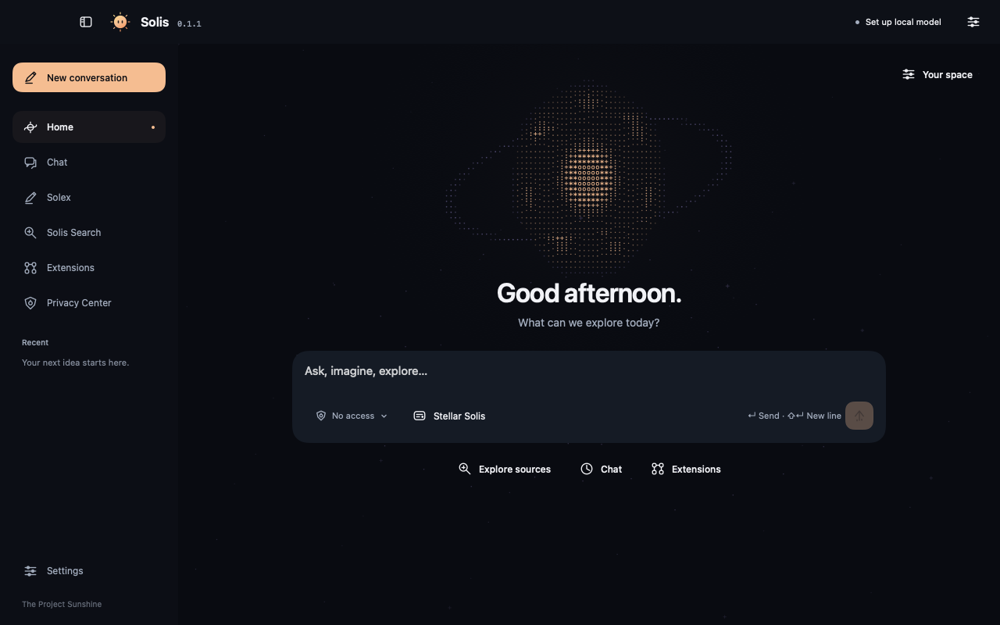
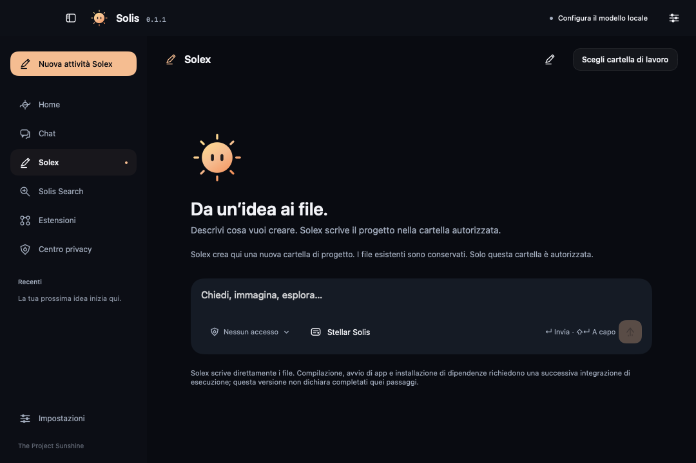
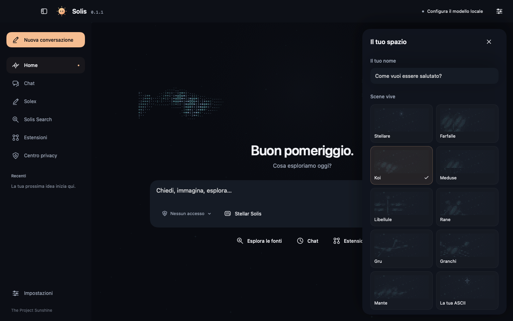
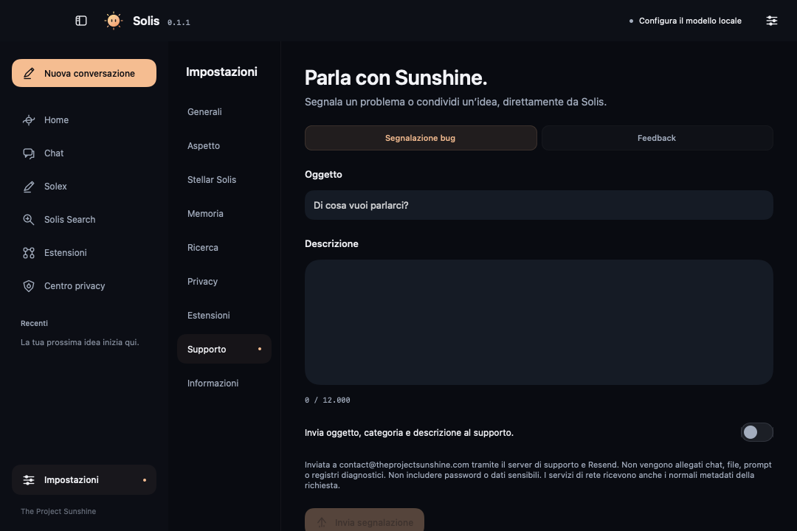

Solis
Uno spazio personale per parlare, creare e dare forma alle idee sul tuo Mac.
Una chat con intelligenza artificiale locale, un ambiente che puoi rendere tuo e Solex per trasformare le richieste in file di progetto. Ogni azione dell’IA passa dalla tua approvazione.

Un dialogo. Un progetto.
Due spazi, per due modi diversi di usare la tua IA.
Chat
Fai domande, sviluppa idee e ritrova le conversazioni salvate sul Mac. Le risposte arrivano in streaming dal modello locale.
Solex
Descrivi quello che vuoi creare, scegli una cartella e approva ambiente e singoli file. Solis scrive direttamente il progetto: il codice non resta da copiare dalla chat.
Nella 0.1.1 Solex propone progetti SwiftUI, Python o web e scrive i file approvati. Compilazione, avvio e installazione delle dipendenze non sono ancora automatici. I risultati richiedono verifica.

Il tuo spazio,
il tuo ritmo.
Otto animali ASCII, una scena stellare e la tua arte personale. Scegli colori, luce, dimensioni e velocità; aggiungi il tuo nome e i tuoi collegamenti preferiti.
Gli animali reagiscono al puntatore. Il sole dell’interfaccia respira e sbatte gli occhi. Le animazioni rispettano Riduci movimento.

Decidi tu, azione per azione.
I permessi si scelgono direttamente dal compositore.
Entrambe le modalità di accesso richiedono sempre la tua approvazione prima di ogni scelta.
Le Estensioni richiedono un consenso iniziale revocabile. La 0.1.1 include data e ora; plugin esterni e controllo generale del computer non sono ancora attivi.
Locale, con chiarezza.
Il modello gira sul tuo Mac tramite Ollama. Le conversazioni restano nell’archivio locale di Solis, senza inferenza cloud integrata.
Per le risposte servono Ollama e Qwen3 1.7B, da configurare separatamente. Puoi esplorare l’interfaccia anche prima. Stellar Solis è l’identità del prodotto basata su Qwen3, non un nuovo modello addestrato.
Download, aggiornamenti, pagine approvate, link esterni e supporto possono usare la rete. L’archivio locale non ha cifratura applicativa. Le verifiche di inferenza reale, qualità e prestazioni richiedono ancora prove dedicate.
Parla con Sunshine.
Segnala un bug o condividi un’idea da Impostazioni → Supporto. Scrivi oggetto e descrizione, scegli il tipo e invia, senza aprire un programma email.
Il modulo arriva a contact@theprojectsunshine.com tramite il server dedicato e Resend. Non vengono allegati automaticamente chat, file o diagnostica.

Porta Solis sul tuo Mac.
Scarica il DMG e trascina Solis in Applicazioni.
Le schermate sono render delle viste reali della 0.1.1 con il fallback opaco di accessibilità. La rifrazione Liquid Glass si vede nell’app aperta; queste immagini non sono catture del desktop.